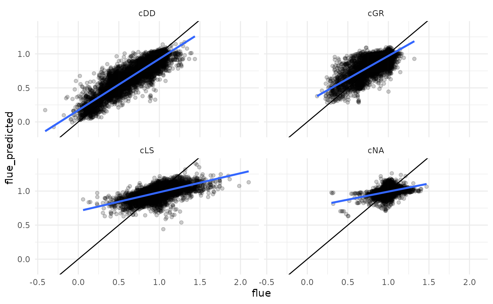

Model evaluation
Koen Hufkens
2024-02-25
model_evaluation.RmdIntroduction
“fLUE identifies substantial drought impacts that are not captured when relying solely on VPD and greenness changes and, when seasonally recurring, are missed by traditional, anomaly-based drought indices. Counter to common assumptions, fLUE reductions are largest in drought-deciduous vegetation, including grasslands. Our results highlight the necessity to account for soil moisture limitation in terrestrial primary productivity data products, especially for drought-related assessments.”
We use fLUE predictions used in previous work as a target in a machine learning based methodology to model this response not based on conventional drought based vegetation indices but using an xgboost based machine learning approach. We used a regression analysis to model fLUE using a 10-fold cross validation and leave-site-out approach.
Methodology
- fLUE ~70 sites / xyz years
- data split 80/20 between fLUE (<1 threshold based values)
- 10-fold cross validation
- leave-site-out cross validation (summary stats)
- …
Results
Scatterplot of the results, observed vs. predicted fLUE.
## [20:31:10] WARNING: src/learner.cc:553:
## If you are loading a serialized model (like pickle in Python, RDS in R) generated by
## older XGBoost, please export the model by calling `Booster.save_model` from that version
## first, then load it back in current version. See:
##
## https://xgboost.readthedocs.io/en/latest/tutorials/saving_model.html
##
## for more details about differences between saving model and serializing.
Table of the regression metrics.
Comparing the fLUE response from publication (blue) and modelled values (dark blue).
## [20:31:14] WARNING: src/learner.cc:553:
## If you are loading a serialized model (like pickle in Python, RDS in R) generated by
## older XGBoost, please export the model by calling `Booster.save_model` from that version
## first, then load it back in current version. See:
##
## https://xgboost.readthedocs.io/en/latest/tutorials/saving_model.html
##
## for more details about differences between saving model and serializing.